Night
Night skies, streets, shadows
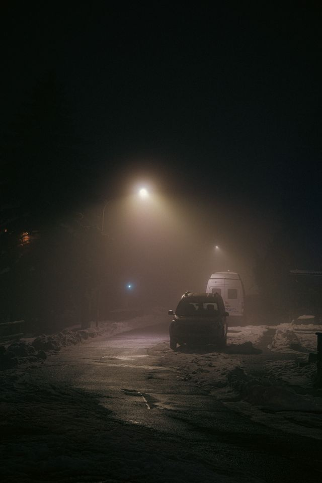
Dark Aesthetic Photography
A curated collection of free dark aesthetic photography for your next creative project.
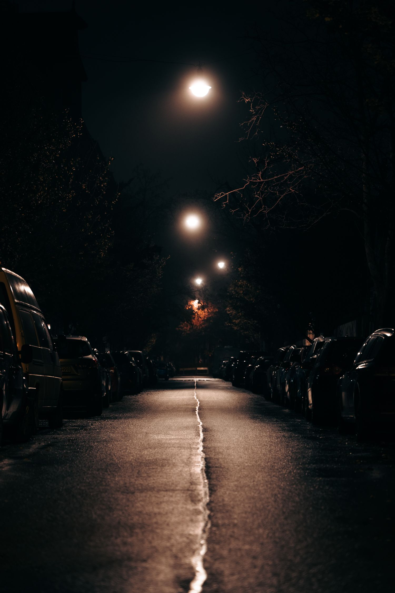
Explore photographs captured in the shadows, abandoned places, midnight streets, forgotten objects and everything beautiful in between.
Night skies, streets, shadows

Abandoned buildings, brutalist structures, dark interiors
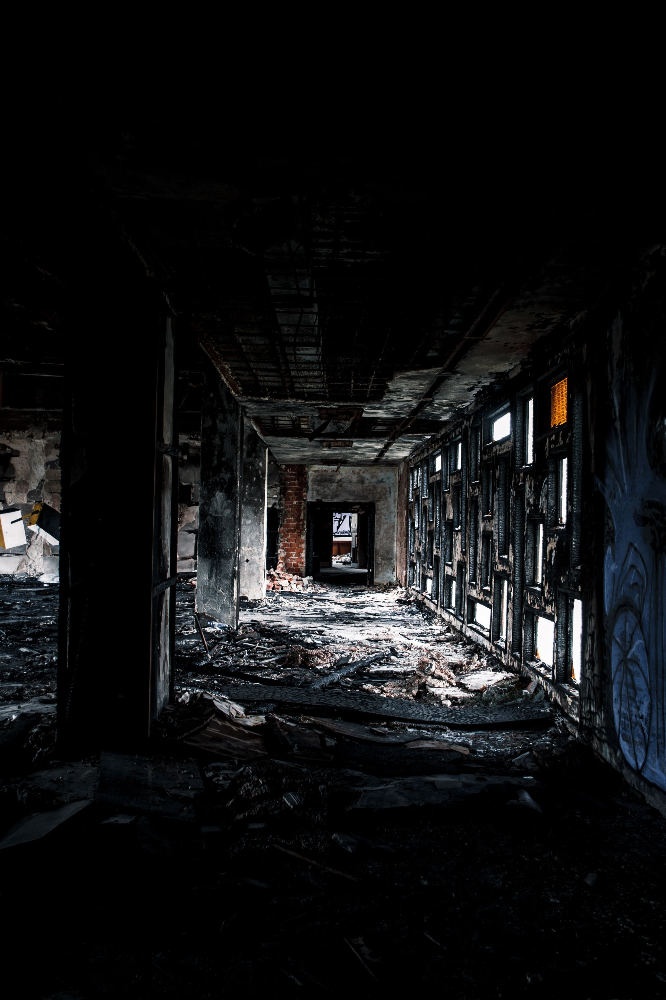
Dark fashion, silhouettes, editorial photography
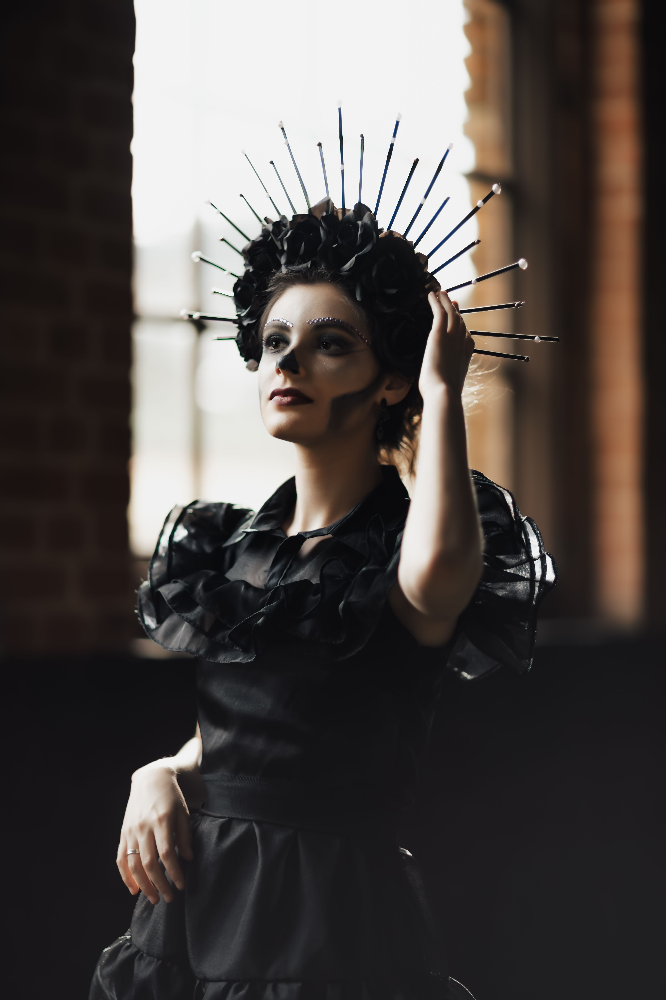
Dark flowers, forests, fog, storms
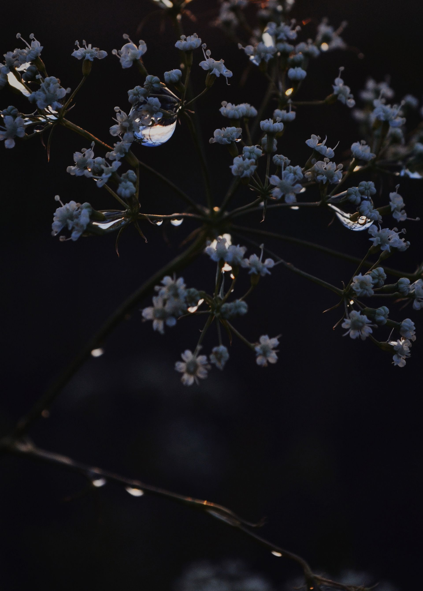
Old objects, film Photography, retro environments
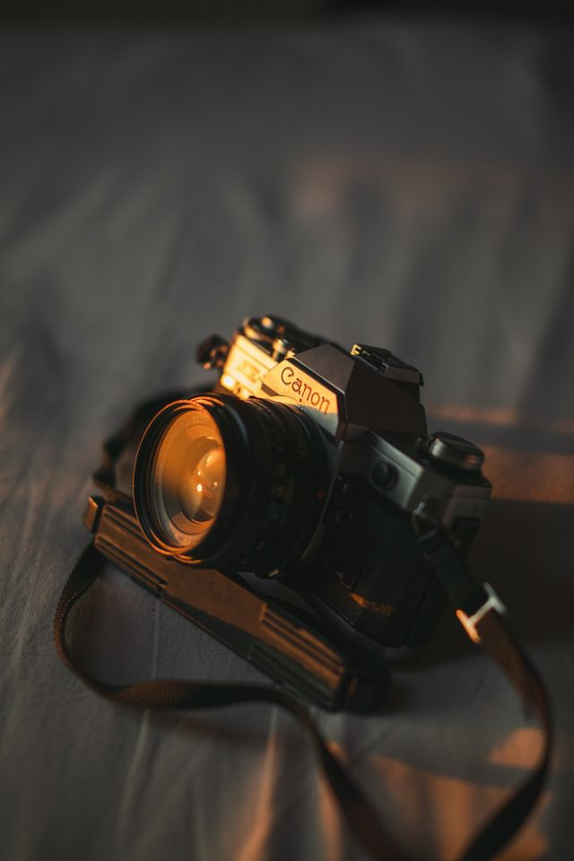
Night drives, luxury cars, headlights, underground garages
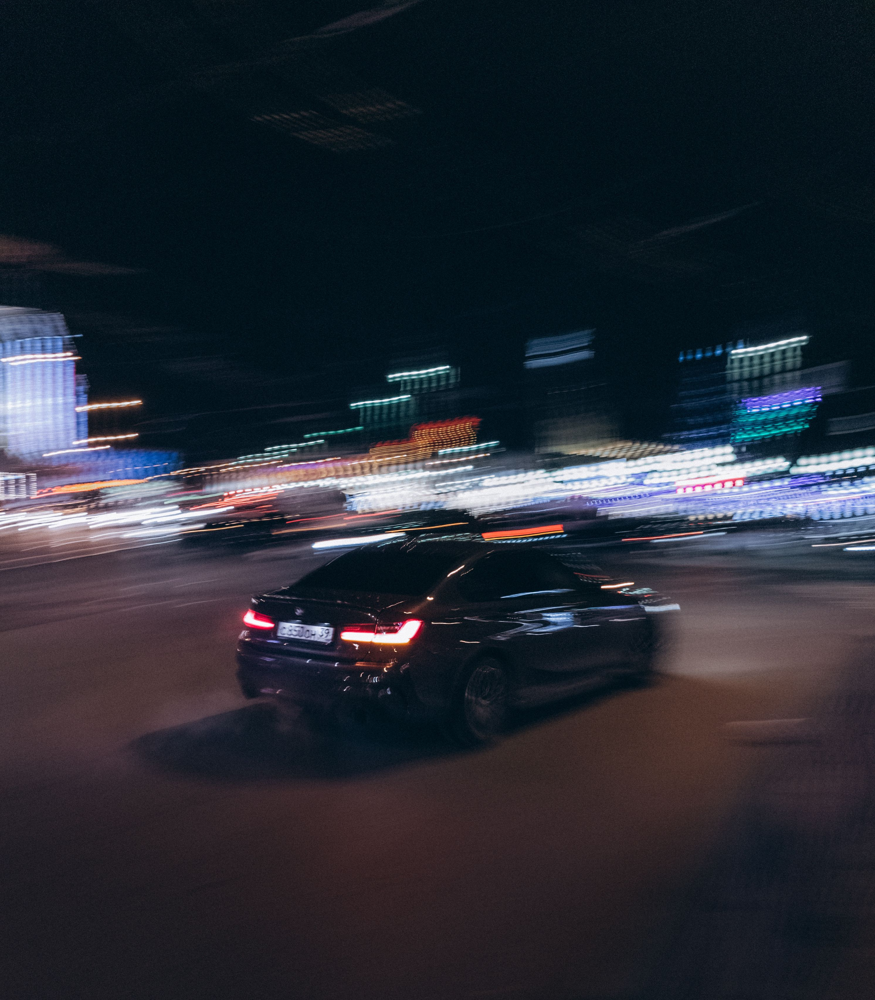
An archive of free aesthetically pleasing free photos
A quiet space hiding stories in the shadows
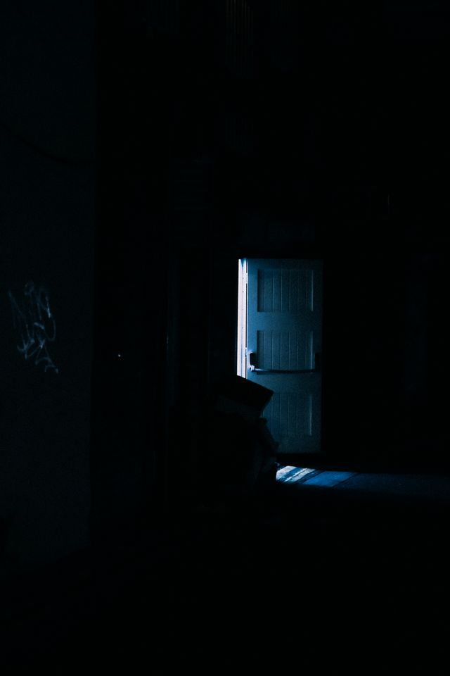
A pale moon watching over the darkness of the night
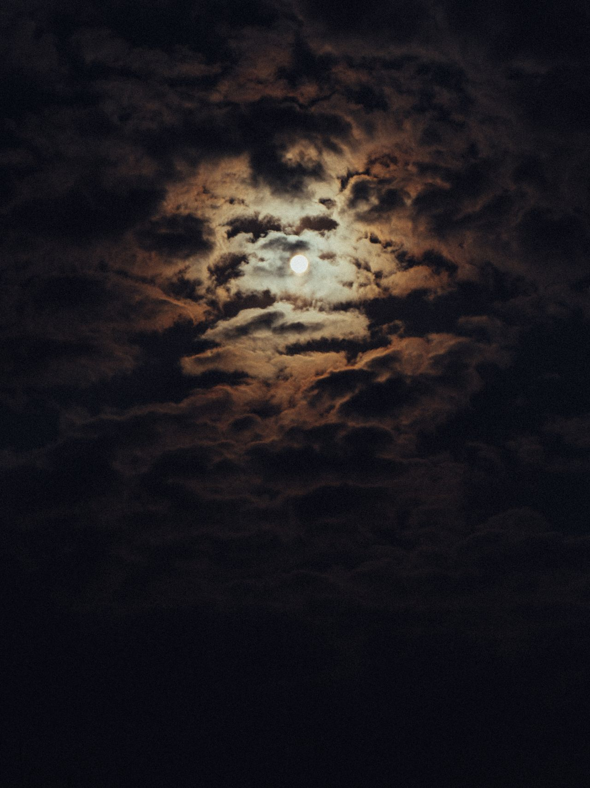
A fragile bloom surrounded by deep shadows
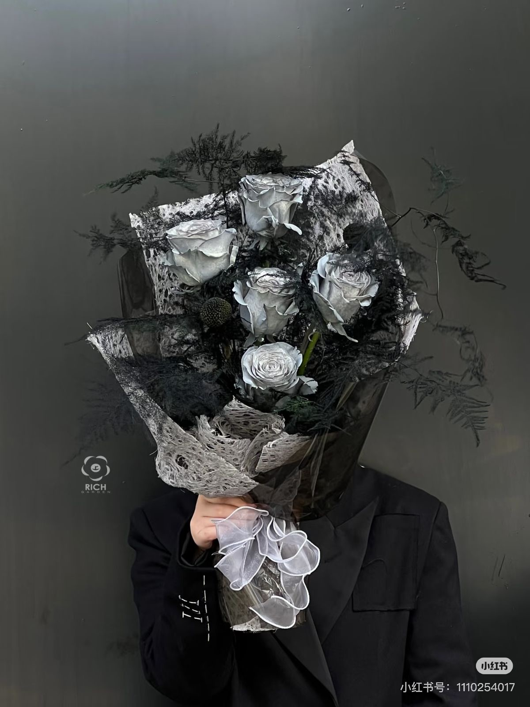
Wet streets, blurred lights, and a city after dark
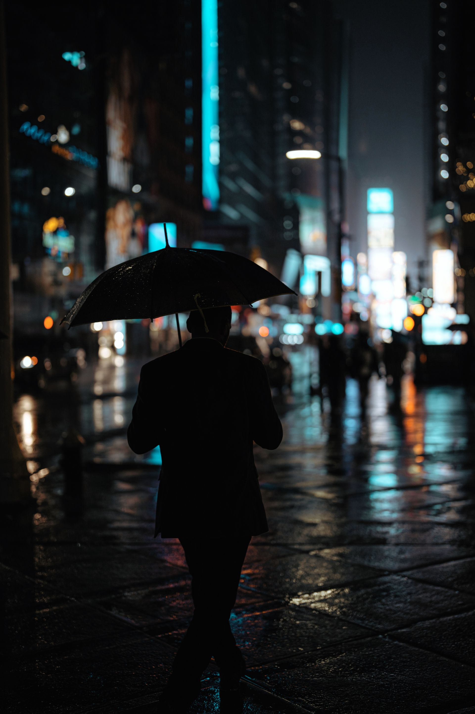
NOIR is a collection of the atmospheric photographs created for people who find beauty in the darker side of visual storytelling
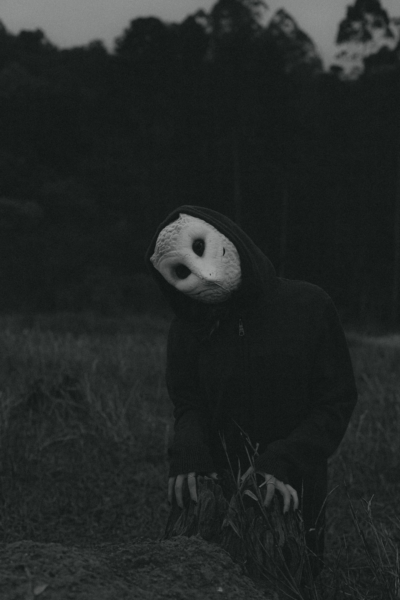
A deserted street moments before midnight. No people. No noise. Just the last light disappearing into the dark